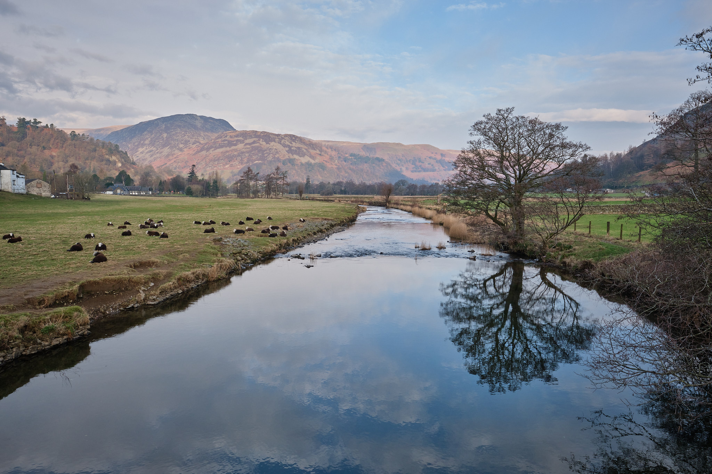
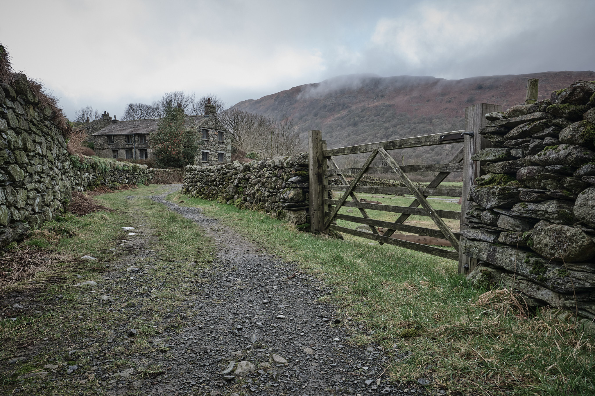
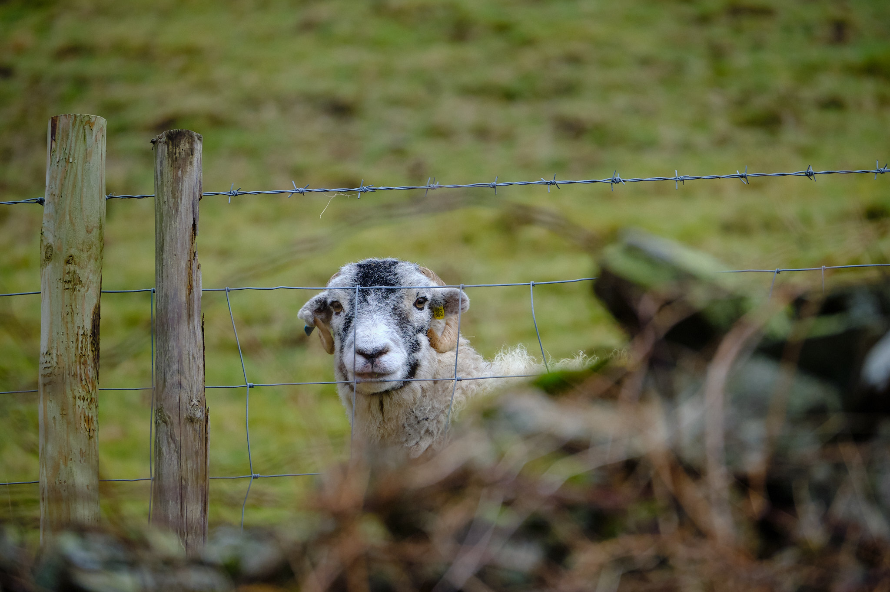
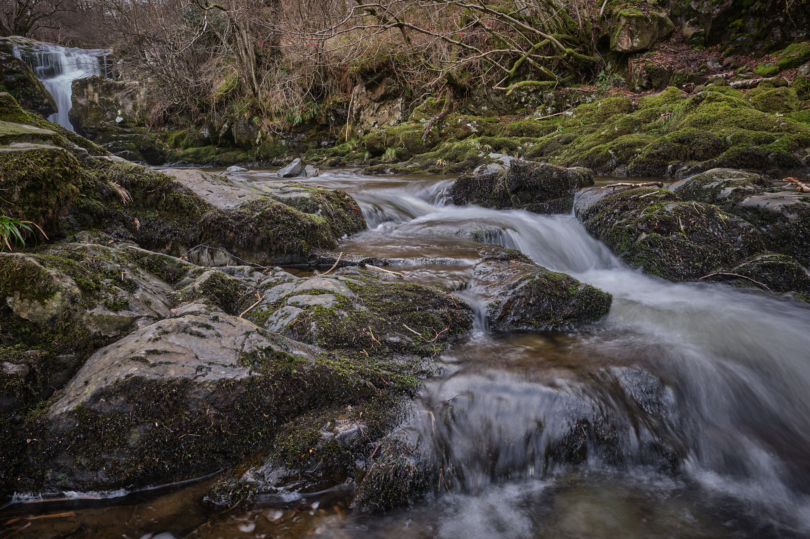
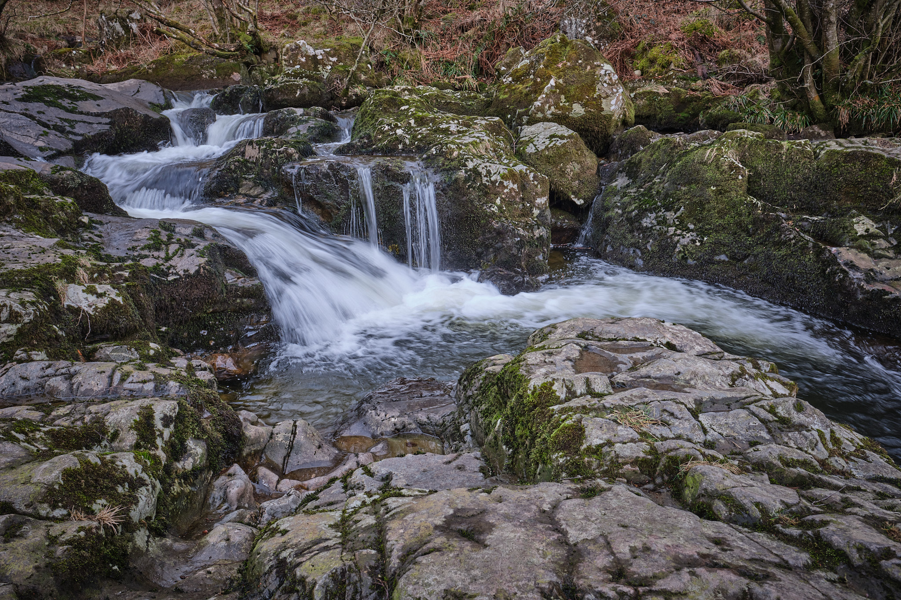
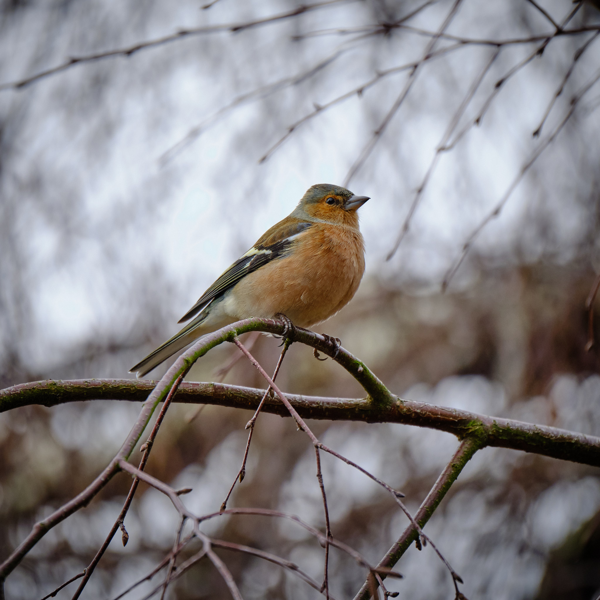
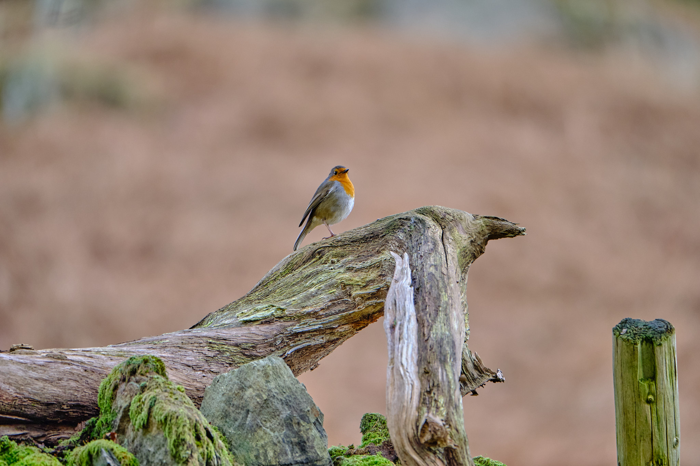
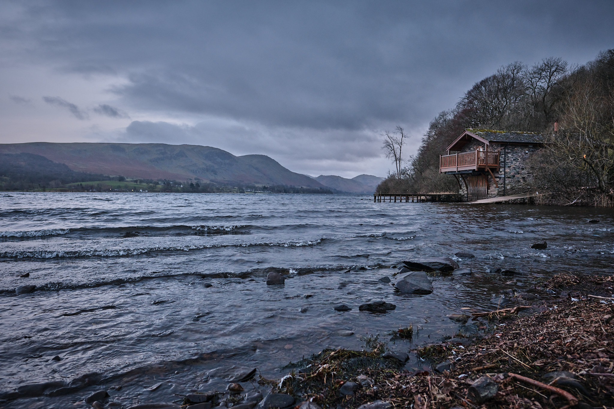

Patterdale
The February half-term break gave us the opportunity to head back to the Lake District for a few days of walking and exploration. We’d been to Patterdale several times and love the care that has been given to the preservation and development of the area. The Lakes have a distinct feel to them; it’s in the stones, and the local businesses, and even the vehicles.
 Patterdale, Fuji X-T2, Nikon 85mm f/1.4
Patterdale, Fuji X-T2, Nikon 85mm f/1.4
The dark skies on our first night confounded the weather forecast and were a treat, and a challenge to our photography as we wrestled with remembering how to capture a night sky. Street lamps, industry, intruder lights and the like all usually conspire to deny the humbling sight of stars and galaxies overhead, and so I was certainly out of practice. I was reasonably pleased with this image, with the Orion Nebula, or NGC 1976 clearly seen as a smudge below Orion’s belt near the centre of the picture. NGC 1976 is a region of star formation, over 1,000 light-years away from us and yet still within our own Galaxy, the Milky Way.
 Goldrill Beck river, Patterdale Fuji X-T5, XF16mm f/1.4 R WR
Our home-from-home was on the road over the Goldrill Beck river on good walking routes. The bridge over the river is a classic spot to capture the iconic pastoral view looking Northwest towards Ullswater.
 Fuji X-T5, XF16mm f/1.4 R WR
There were plenty of timeless sights to drink in as we walked the paths around the Southern end of Ullswater, which, if we had to state a preference, would be our favourite end. It feels more “Lake District”: walls are layered slates, buildings are, too. Raptors and smaller birds proudly converse and advertise their presence. People exchange pleasant conversation if they want to, or pass by, deep in their reveries. Others peek at you from behind walls, curious.
 Fuji X-T2, XF100-400mmF4.5-5.6 R
We didn’t venture too far on this trip, spending more time on our feet than in the car exploring. Sometimes we do more “drive-by shooting” in areas we don’t know too well, so as to try to get a sense of a place. That often doesn’t work but this break, we went slower, and breathed the place in better. Oh, for the life that gives the fullest opportunity for breathing places in.
 Brothers Water Fuji X-T5, XF16mm f/1.4 R WR
Brothers Water Fuji X-T5, XF16mm f/1.4 R WR
At Aira Force (meaning waterfall, from Old Norse), we bimbled around snatching long and short exposures, chatting to other photographers who had travelled from far to capture a memory of the place. This is the kind of place that increasingly tests my surety of foot: the rocks are wet and slippery, paths are muddy, roots are deadly cunning. The effect of this environment is to slow me down even more now I’m older and less Weeble. This is a blessing: I see more.
 Aira Force Fuji X-T5, XF16mm f/1.4 R WR
 Aira Force Fuji X-T5, XF16mm f/1.4 R WR
 Air Force Fuji X-T2, XF100-400mm
Air Force Fuji X-T2, XF100-400mm
This is not to say that I see very much, of course. At Aira Force we saw or rather, heard then saw, a drone overhead with the owner standing aloof from danger on a nice dry, flat rock. The point of view from the mobile platform is always going to be better than wherever I can scramble to with my gear. The cameras in many of these devices are often on a par with any digital SLR. The Devil in me wanted first to throw a rock at the drone, then at the owner. Instead, I wondered whether drone photography is something else – something different to stills photography altogether. It’s a matter of choice and opportunity, I suppose, what medium an artist uses to tell a story. Images are part of that, perhaps, no matter how obtained, but the mental imagery they invoke might be more so.
Buzzard, Fuji X-T2, XF100-400mm
 Chaffinch Fuji X-T2, XF100-400mm
I carried two cameras as we walked; one for landscape, wider images, with a 16mm lens, and the other, with my monster Fuji XF100-400mmF4.5-5.6 R zoom to try to capture some of the wildlife. We saw more than I captured, including a much-signposted but not often seen red squirrel. The Air Force offered me a reminder to have the correct settings on at all times by flying low over Ullswater when I hadn’t (this jet was taken at 1/125s hand held on manual focus), but which helped me be a little more ready for robins and raptors.
 Fuji X-T2, XF100-400mm
We had planned the trip, sort of, by identifying some of the interesting places others had written about or shared. One of these was The Duke of Portland’s Boathouse at the Northern end of Ullswater, once the property of the 18th Century 3rd Duke of Portland, sold to save him from bankruptcy. Now, it’s a hugely overpriced holiday rental.
 The Duke of Portland’s Boathouse Fuji X-T5, XF16mm f/1.4 R WR
We delayed the journey home after check-out time in order to enjoy a little serendipity. Driving up the Kirkstone Pass, I misunderstood the navigator and instead of turning into a car park at the top of the pass, headed down the road called “the Struggle” that leads to Ambleside and Lake Windermere. I pulled off the road to give us time to decide how far we would go down that road – we were not keen on visiting the denser touristy places, even at this time of year. When we checked the view, we decided it was a good place to eat the lunch we had bought in Glenridding.
 The Struggle Fuji X-T5, XF16mm f/1.4 R WR
The Struggle Fuji X-T5, XF16mm f/1.4 R WR
We continued further to explore, finding a couple of interesting old pines at the side of the road. This is beautifully circular, as we had been staying in a place called, “Wordsworth Barn”, so named for the poet who onced owned the barn that is now a holiday rental.

Wordsworth Barn was quite wonderful, although, at 6’4”, I enjoyed a close personal relationship with the old beams. That aside, the host, Joan, had thought cleverly about what her guests need to know and have when staying here. We had booked for our basic needs – wood-burning stove, self-contained, superb location and ease of access to the things we wanted to see – and Joan had taken care of all of the things we didn’t think to specify, like every kind of glass we might use; dressing gowns; a bath and a shower; a personal welcome; thoughtful use of space; fresh milk and a bottle of fizz. None of the usual irritations, either: fuel for the log burner is included, recycling is easy and intelligently organised, everything works (although a builder’s knack is required to unlock the front door). We will be back.
Wordsworth was well known for his love of trees (Dale and Yen, 2022) and “wished to be remembered as a tree hugger” (Yen, 2022). It seems appropriate to end this post with something written by Wordsworth whilst in the area, that seems to connect some of our experiences over the past few days: